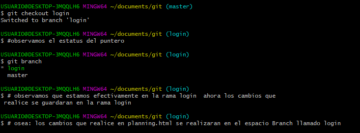

| Instalacion Git | Ilustracion | |
|---|---|---|
| dirigirse al sitio web https://git-scm.com/downloads | |
seleccionar siguiente previa eleccion de la arquitectura del computador | |
| seleccionar ubicacion de destino en el equipo local para la instalacion Git | |
|
| seleccion de componentes integrados en la terminal | |
|
| instalacion de carpeta de repositorio Git | |
|
| instalacion del editor de texto Vim | |
|
| adicion a las clase path | |
|
| Elegir la biblioteca SSL TLS para las conexiones HTTPS seleccionar la opcion recomendada "usar la linea de comando por terceros esto evita el desorden en de herramientas ente Unix y microsoft" | |
|
| configurar el emulador para el uso con Git Bashseleccionar revisar el estilo de Windows con Unix style | |
|
| usar la terminal MinTTY (default terminal of MSYS2) que permite la interaccion no rectangular de la consola y permite la emulacion con winpty de Python con MinTTy de la consola Git | |
|
| comportamiento de git pullelección por defecto la accion git pull | |
|
| que tipo de asistencia de credenciales debe configurarse | |
|
| configuraciones opcionales extra. funciones a habilitar de almacenamiento en la memoria cache("core.fschace") | |
|
| configuracion experimenteal | habilitar | |
| configuracion experimental habilitar segun preferencia psudoconsolas para python con Git Bach | |
|
| confirmacion de instalacion y lanzamiento de git bash | |
|
| instalacion con la configuracion determinada | |
|
| visualizacion de consola integrada git bash | |
|
|
comandos gitbash |
|---|---|
| configuramos la informacion inicial necesaria para la identificacion del usuario (git) |

|
|
corroborar la instalacion con el comando git |
 |
| configuramos la carpeta local donde va a alojar el proyecto (git) creandola con mkdir |  |
| ingreso a al folder creado anteriormente |  |
| creacion de un documento desde git |  |
| creacion archivo gitignore |  |
| abrir editor de texto desde git |  |
| agregar archivo para ignorar desde el editor de texto |  |
| inicializacion con (git init) |  |
| ejecucion git status estado de la inicializacion en git |  |
| configuracion git bash | ilustracion |
|---|---|
| realizamos la adicion de los archivos creados y modificados | |
| generamos git status |  |
| adicion de los archivos al area de stage nombrandolos uno por uno o llamandolos a todos |  |
| permite devolver del area de preparación un archivo determinado |  |
| comprobar con git estatus la preparacion confirmada de los archivos agregados |  |
| realizacion commit, al igual que los siguientes es buena practica realizar la siguiente secuencia de comandos : git status (estado del repositorio) git add . o git add # seguido del nombre del archivo individual este ultimo con la opcion de realizar commit por cada archivo |  |
| aviso de cambios: cuando modificamos los archivos del repositorio desde el working directory es una buena practica ejecutar la siguiente secuencia de comandos: git status (estado de commit ) git add . (de working directory a stage area) git commit -m |  |
ejecutando los comandos git bash anteriores vamos a obtener un repositorio local alojado en un directorio especifico configurado con la funcionalidades de un sistema controlador de versiones local
| para crear un repositorio remoto en GitHub debemos registrarnos, seguido ir a la opcion new, nombrar el repositorio, oprimir crear dirigirse a settings y tomar el url completo con el comando git remote add origin + url |  |
| antes de ejecutar el comando de enlace git - github debemos tener en cuenta los pasos anteriores para luego ejecutar el comando git remote add origin https: // url |  |
| finalmente vamos a ejecutar el comando git push -u origin master |  |
con la debida configuración del repositorio local git lograremos enlazar git y GitHub
por otra parte este es un repositorio nuevo, solo tiene la rama principal master y no posee ramas locales ni remotas hasta el momento
| reporte o estatus de la rama master |  |
la ilustración anterior muestra que en este caso solo exite una rama: branch master o principal
es recomendable no trabajar sobre la rama principal ya que es el codigo principal y se corre el riesgo de realizar cambios irreversibles sin contar el conflicto de información con los participantes del proyecto
| creación de un branch e ingresar directamente a el git checkout -b login |  |
| ejecutamos nuevamente el comandogit branch para visualizar el branch |  |
| ejecutamos git push -u origin y añadimos la rama remota a agregar la verificación se puede realizar refrescando el repositorio GitHub/td> |  |
| ejecutamos git branch -d y el nombre de la rama en este caso local en la ilustración es visible un ejemplo utilizando branch checkout |  |
| ejecutamos git branch en este caso la rama que va a eliminarse la desarrollo |  |
| ejecutamos git push origin --delete desarrollo |  |
| escribimos el comando (git checkout login ) para cambiar de rama en este caso debemos tener en cuenta escribir el nombre de la rama apuntador |  |
cuando realizamos cambios entre ramas es necesario ejecutar el comando git status para observar el estado de la rama
| cuando deseamos clonar un repositorio ya creado (git clone) con anterioridad debemos crear un folder en el equipo para alojar el proyecto compartido |  |
| ejecutamos (git clone + URL github) proporcionado y realizamos validación dentro del folder creado ejecutando git status |  |
| Establecer una rama o branch de trabajo colaborativo |  |
| realizamos el envio del branch collaborative a GitHub |  |
| establecemos el branch remoto individual en donde realizaremos el avance de nuestros cambios |  |
| realizamos el envio del branch individual a GitHub |  |
| verificamos en que rama estamos apuntando para realizar empezar a trabajar sobre el iniciando desde el working directory en este caso el branch a modifcar es login por tanto debemos ejecutar git checkout + nombre de la rama apuntadora |  |
| ejecutando el comando git checkout login podemos iniciar a realizar nuestro trabajo |  |
| primero se halan (pull) con el fin de obtener la ultima versión del desarrollo cambios luego se envian los cambios realizados (push) |  |
| ejecutado git pull origin enviamos los cambios |  |
| este comando nos permitira traer y observar los cambios realizados por otros participantes sin fusionarlos al repositorio local |  |


alli apareceran los cambios y modificaciones realizadas en el commit sobre la rama en la cual se a venido trabajando